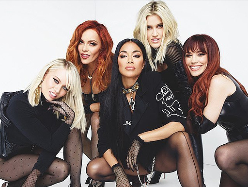

PUSSYCAT DOLLS
Pussycat Dolls é um girl group estadunidense de POP e R&B formado pela coreografa Robin Antin. O grupo começou como uma trupe burlesca em 1995 na cidade de Los Angeles, Califórnia. O grupo atraiu muita atenção da mídia nacionalmente e em 2003 assinaram contrato com a Interscope Records, recriando a trupe como grupo musical composto por Nichole Scherzinger, Carmit Bachar, Ashley Roberts, Jessica Sutta, Melody Thorton e Kimberly Wyatt. Com o seu álbum de estreia “PDC” as Pussycat Dolls alcançaram sucesso mundial com singles que se tornaram grandes hits como “Don´t Cha”, “Buttons” e “Stickwtu” que recebeu até nomeação ao Grammy. Apesar de todo o sucesso global e terem se tornado uma marca comercial, o grupo sempre teve muitos conflitos internos por conta da ênfase exacerbada em Nicole Scherzinger e o descaso sentido por parte do restante das membros. Assim, em 2008 Carmit Bachar anunciou sua saída do sexteto que continuou como quinteto no lançamento do seu segundo álbum de studio “ Doll Domination”. Em 2010 anunciaram um pequeno hiato mas posteriormente confirmaram ser uma separação definitiva da banda. Foi classificada pela Billboard como 80º artista musical de mais sucesso dos anos 2000. As Pussycats Dolls venderam 54 milhões de discos e singles por todo mundo, tornando-se assim um dos girl groups mais vendidos de todos os tempos. Desde sua separação sendo rolaram muitos boatos e era um desejo dos fãs a volta do grupo e em 2020 se juntaram novamente como banda e lançaram o single “React” que já conta com 57 milhões de visualizações no videocliple da musica e os fãs novamente estão na esperança de uma turnê do grupo em 2022.